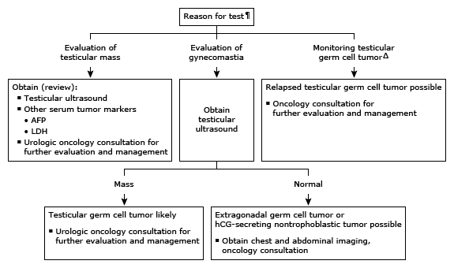

Initial evaluation of a positive hCG (tumor marker) in males*

This algorithm is intended for use with additional UpToDate content on gynecomastia and testicular germ cell tumors.
hCG: human chorionic gonadotropin; AFP: alpha-fetoprotein; LDH: lactate dehydrogenase.
* The normal reference range for quantitative hCG using a tumor marker assay varies with the assay but is typically less than 5 to 10 units/L. Interpretation of a specific abnormal result should be based on the reference range reported with that result.
¶ For the evaluation of males with gynecomastia or during the evaluation, treatment, and monitoring of testicular tumors, quantitative hCG should be measured using a tumor marker assay (variably called beta-hCG tumor marker assay, total hCG tumor marker assay). This is different than the quantitative beta-hCG measured to detect pregnancy.
Δ For males who have completed definitive therapy, close surveillance should continue with serial measurement of quantitative hCG (and other tumor markers [AFP and LDH]). For hCG monitoring, the same tumor marker assay should be used as results from different assays may vary.